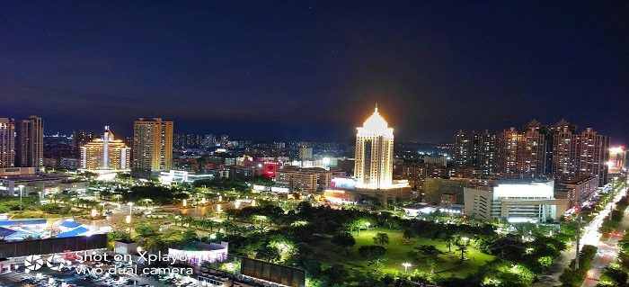

茂名市情
来源：广东省情网

茂名市位于广东省西南部。1983年设立地级市。2023年辖茂南区、电白区，代管信宜市、高州市、化州市，另设广东茂名滨海新区、茂名高新区、茂名水东湾新城3个经济功能区。土地面积11451.8平方千米。年末户籍人口824.14万人；常住人口625.23万人，其中城镇人口295.89万人。祖籍茂名市的海外华人、华侨74.2万人，祖籍茂名市的港澳台同胞7.7万人；主要侨乡有信宜市。
2023年，茂名市入选全国数字百强市；获2020—2021年度全国无偿献血先进市奖。
中共茂名市委书记：庄悦群；市人大常委会主任：庄悦群；市长：王雄飞；市政协主席：刘芳；市纪委书记、监委主任：李长林（任至8月），陈秋生（8月任市纪委书记，9月任市监委副主任、代理主任）。
2023年，茂名市完成农林牧渔业总产值1153.06亿元，比上年增长4.5%。粮食产量153.21万吨，增长0.02%；水果总产量480.65万吨，增长5.1%。其中，香蕉产量190.92万吨，下降0.4%；荔枝产量62.09万吨，增长12.8%；龙眼产量56.27万吨，增长14.4%；李子产量32.98万吨，增长10.2%。
茂名市规模以上工业增加值比上年增长5.4%；固定资产投资增长5.3%；社会消费品零售总额1599.99亿元，增长5.8%；居民消费价格增长0.3%。实施"激发企业活力38条""提振和扩大消费23条"等措施，举办首届广东（茂名）荔枝电商消费节等促销活动120场；"1959南越文创街""籺村"入选广东文旅消费新业态热门场景；万达广场、"东江·八点"文旅特色街区建成开业。
茂名市构建"市县镇村"责任体系，6个示范墟开墟迎客，高州市4个镇入选国家农业产业强镇，全市"2县7镇59村"被列为全省典型。实施17项"小切口"改革，成为全省首批农村职业经理人试点地市。农房微改造10万户，农村公路改建982千米，农村生活污水治理率67.2%，"美丽宜居村"超过70%，建成乡村微工厂190家，带动就业1万人。
茂名市加快推进茂名大道改造，东环大道、共青河新城片区及高铁片区路网建设，大园三路、双山八路等"断头路"打通，油城三路、红旗中路等易涝点完成改造。小东江高山拦河闸坝项目完工。启动老旧小区改造242个，新增智慧停车泊位6819个，城市宜居指数进入全国50强。
茂名市完成林分优化、森林抚育、新造林抚育面积1.41万公顷，修复红树林面积57.33公顷，创建幸福河湖450千米，打造绿美广东生态建设示范点7个，义务植树1206万株362万人次。根子镇古树群入选全国"100个最美古树群"。
茂名市完成地方一般公共预算支出513.78亿元，比上年增长0.7%。其中，教育支出140.91亿元，增长0.4%；社会保障和就业支出92.55亿元，增长9.3%；卫生健康支出66.41亿元，增长2.8%。民生类支出429.13亿元，下降0.7%，占一般公共预算支出比重83.5%。医保住院费用按病种分值付费。93个镇（街道）建成综合养老服务中心。新（改、扩）建公办幼儿园、中小学校40所，新增学位2万个。全年城镇新增就业4.59万人，失业人员再就业1.94万人，就业困难人员实现就业2238人，促进创业2479人。